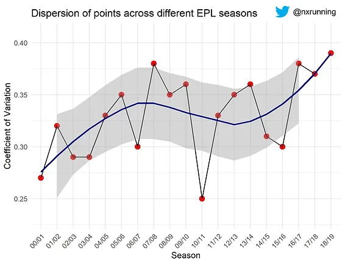

Is the English Premier League more or less competitive as compared to a decade ago? This article examines and compares the competitiveness of different seasons based on the coefficient of variation metric.

Presently, Liverpool is en route to being runaway champions in the English Premier League (EPL), with 22 points separating them from second-placed Manchester City. Incredibly, the premier league leaders have gone a total of 42 games unbeaten at the moment, with their last defeat happening at the Ethihad Stadium on 3rd January 2019.
Inevitably, this invites a comparison between Liverpool and the “Invincible” Arsenal team. The latter currently holds the record for the longest unbeaten EPL run with 49 games in 2003/2004. To date, the record has stood for close to 16 years. Can Liverpool surpass this incredible record? In an online article, former Arsenal player Robert Pires commented that if Liverpool goes on to break the record, the league was much harder in the past as compared to present.
“They will be champions by going unbeaten, but they can also beat our record. Everything has changed today. People will compare, but I think it was much, much harder in our time.”
Is he right to say that? This article examines whether the present EPL is indeed getting easier as compared to many years ago. First, let’s visualise how many points were required to become champions across the different past seasons since 2000/2001.
Based on the figure, we can clearly see that teams need at least 80 points to win the titles. The “Invincible” Arsenal team achieved a total of 90 points in 2003/2004 to lift the championship trophy. However, it is interesting to point out that 90 points would be insufficient to win the league over the past three seasons. Liverpool fans would be especially frustrated that despite accumulating 97 points in 2018/2019 season, they were still that tiny bit shy of the title. Hence, is the league really becoming less competitive like what Robert Pires said?
Coefficient of variation
With the aim to evaluate the competitiveness of the league, we will use the coefficient of variation (CV) metric. CV is calculated by dividing the standard deviation of a dataset by its mean. It simply represents the relative spread/variance of the data, and ranges between 0 to 1. In finance, CV is used to assess the volatility of stocks. In this article’s context, we compare the competitiveness of different EPL seasons based on each season’s CV. If a league is more competitive, we will expect that the point total of teams to be closer to one another, hence a lower CV. On the other hand, a higher CV represents less competitiveness as there is greater spread in point total among teams.

The figure above illustrates the CV across different seasons. Generally, we see there’s relatively greater variation in more recent seasons as compared to the past. For example, there’s 29% variation in 2003/2004 season as compared to 39% variation in 2018/2019. Based on the graph, the most competitive season was probably in 2010/2011 with the least variation of 25%. This suggests that there’s some truth in Robert Pires’s comments.
Next, let’s further analyse the competitiveness of the league based on different standings of the table. The figure above illustrates the CV of the top six teams across different seasons. This tells a slightly different story as compared to the previous graph. The higher CVs were observed in 2003/2004 and 2004/2005 seasons, which suggests greater dispersion in point total among the top teams. This implies relatively less of a close battle for the title in these two seasons. In contrast, we see a clear trend of decreasing CV from season 2005/2006 onwards till about 2015/2016. This coincides with the shift of the traditional “Top Four” (Arsenal, Manchester United, Chelsea, Liverpool) dominance to the emergence of the “Big Six” with Tottenham Hotspur and Manchester City joining in to challenge for the title.
Although there’s an increase in CV among the top six teams in recent seasons, it is still comparatively less than the “Invincible” season. This suggests that it is much more competitive among the top teams in recent seasons as compared to the past. This also indicates that challenging for a champions league qualifying spot is much tougher now than two decades ago.
In conclusion, while the league may be more competitive overall in the past, there is less competition among the top teams when comes to challenging for the title or qualifying for the champions league as compared to present seasons.
Do you agree with Robert Pires’s comments?